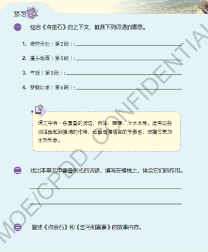
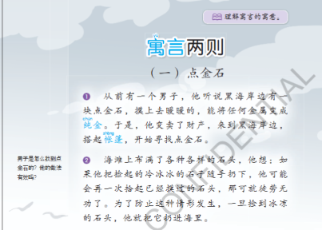
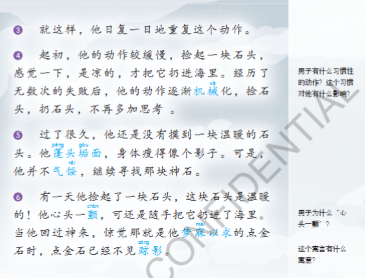
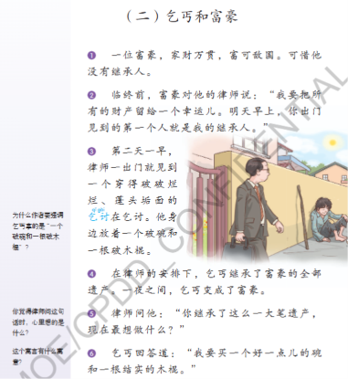
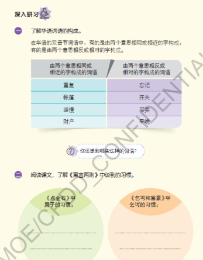

教师教学流程与参考答案
中一高级华文 · 单元四 · 进阶 · 2课时
教学重点与流程
从情节读懂习惯，再用动作变化、细节和对比解释寓意。区分坚持与机械重复，也区分合理推测与事实。
第一课50分钟：导入3分钟；第一至二段10分钟；第三至四段9分钟；第五段12分钟；第六段8分钟；口头整理情节与初步寓意8分钟。
第二课50分钟：第二则逐段阅读15分钟；习惯与复述8分钟；词语整理7分钟；两则开放写答与订正16分钟；收藏及导出4分钟。
第一课末口头形成初步理解，正式开放写答放在两则逐段学习之后。人物特点由学生自己概括；口头复述不再重复抄写。
教师资料与下载
投影直接使用本课网页。没有PPT、替代幻灯课件或额外PDF。
1 点金石 第二段 · 方法与目的
结合《点金石》的上下文，推测下列词语的意思。①徒劳无功（第2段）
男子是怎么找到点金石的？他的做法有效吗？
教材预习一①；《点金石》第二段旁批原题。
展开参考答案与讲评
“徒劳无功”指白费力气、没有成果。他捡起石头辨认温度，把冰凉的石头扔进海里，以免再次捡到同一块石头。从避免重复检查的目的看，这种做法有用；但这并不能保证他最后取得点金石。
教参提出“未必有效”，理由是可能失手把点金石扔进海里。学生若能说清评价的是“避免重复”还是“最后成功”，均可接受；目前不能把后来的结果说成已经发生。
解释：先提取动作与目的，再说明评价标准。原旁批的“怎么找到”在这里按寻找方法理解，并非第二段已经找到了。
易错：只写“有效／无效”而没有理由；把“可能”说成已经发生。
分层提示：把“防止这种情形”与前一句连起来。 → 看“再一次捡起已经摸过的石头”和“一旦捡到冰凉的石头”。
核对要点：分清“防止重复”与“保证成功”两个目标。；方法和理由都与本段有关。
2 点金石 第四段 · 动作怎样改变
男子有什么习惯性的动作？这个习惯对他有什么影响？
《点金石》第四段旁批原题。
展开参考答案与讲评
他后来机械地捡石头、扔石头。起初，他会先感觉温度，确定石头是凉的才扔；后来动作逐渐机械化，不再多加思考。习惯使他减少了对每块石头的认真辨认。
解释：本段能够证明的是“动作变机械、思考减少”。读到第六段后，再用实际结果检验这一影响。
易错：把“机械化”解释成使用机器；只写动作更快，漏掉不再思考。
分层提示：寻找“起初”和“经历了无数次的失败后”。 → 比较“感觉一下……才”和“不再多加思考”。
核对要点：比较了起初与后来。；说明“不再思考”与习惯的联系。
3 点金石 第五段 · 词义与人物
结合《点金石》的上下文，推测下列词语的意思。②蓬头垢面（第5段）③气馁（第5段）
“他蓬头垢面，身体瘦得像个影子。”用了什么修辞手法？有什么作用？
这时的男子是一个怎样的人？请结合课文内容说明。
教材预习一②③；修辞题据教参2.3；人物特点为教师补充。
展开参考答案与讲评
蓬头垢面：头发凌乱，脸上很脏。气馁：失去勇气、灰心。句子运用比喻，把男子瘦弱的身体比作影子，突出长期寻找后消瘦、憔悴的状态。示例：他有毅力。虽然寻找很久仍没找到，身体也变得瘦弱，他仍不灰心、继续寻找，说明他面对困难没有轻易放弃。
也可结合第四、五段指出他虽坚持，却缺少反思。须说明判断范围，不因为“坚持”就断言一定成功。
解释：本段支持“有毅力”等判断；全文对机械重复的提醒，不能抹去这个阶段真实表现出的坚持。
易错：把“像个影子”说成夸张而不说明比喻关系；只说“生动形象”；人物只写“脏”“瘦”。
分层提示：找“像”前后的两样事物，并看“可是”后面的行动。 → “影子”突出身体瘦弱；人物特点要用是否继续寻找来说明。
核对要点：准确说明比喻写出了什么状态。；特点由自己概括，并有相符依据和解释。
4 点金石 第六段 · 一颤与错过
结合《点金石》的上下文，推测下列词语的意思。④梦寐以求（第6段）
男子为什么“心头一颤”？
教材预习一④；《点金石》第六段第一则旁批原题。
展开参考答案与讲评
梦寐以求：迫切地盼望得到。他摸到的石头是温暖的，这与点金石的特征相符，使他瞬间意识到这可能就是一直寻找的点金石，所以内心突然一震。可是机械化的动作仍使他把石头扔掉，等回过神来才完全认清。
教参参考“突然意识到扔出去的可能是点金石”可接受。回答需连接“温暖—点金石—内心震动”，不苛求反应发生在抛出前还是抛出的瞬间。
解释：“心头一颤”和“回过神来”显示反应与完全认清之间的短暂落差；不是冷得发抖。
易错：只说他很激动而不解释为什么；说他主动决定丢掉宝物。
分层提示：先比较石头的温度，再想起第一段。 → 普通石头冰凉；传说中的点金石摸上去暖暖的。
核对要点：联系了温度与点金石的特征。；区分短暂察觉和后来完全认清。
回看第四段：习惯最终造成了什么后果？
不加思考地重复动作，让他把真正的点金石也扔了，错失机会。
5 乞丐和富豪 第三段 · 破碗与木棍
为什么作者要强调乞丐拿的是“一个破碗和一根破木棍”？
《乞丐和富豪》第三段旁批原题；分两次阅读理解表达作用。
展开参考答案与讲评
本段先写出乞丐生活贫困：衣着、外貌和乞讨工具都很破旧，连一个完好的碗和牢固的木棍都没有。作者选这些具体物件，让贫困处境更清楚。读到第六段，再回看它们与结尾愿望的联系。
解释：先完成当前段能支持的判断。与结尾的铺垫关系将在通读后讲评，不提前把后来发生的事当作本段已经知道的内容。
易错：只写“生动形象”；此时便说他已经有钱却继续乞讨。
分层提示：把这两件东西与衣着、外貌放在一起看。 → “破破烂烂”“蓬头垢面”“破碗”“破木棍”共同说明什么？
核对要点：说明物件的破旧状态。；把细节与生活处境联系起来。
6 乞丐和富豪 第五段 · 律师的期待
你觉得律师问这句话时，心里想的是什么？
《乞丐和富豪》第五段旁批原题。
展开参考答案与讲评
律师可能认为乞丐原来生活贫困，现在突然继承巨额遗产，应当有许多改变生活的愿望，很想知道他会先实现哪一个愿望。
也可推测律师在想他会怎样安顿生活、使用财产；只要与贫困到富有的变化有关、措辞保留可能性即可。
解释：原文没有直接写律师的心理。由处境变化和问话作推测，仍须区分推测与事实。
易错：断言律师一定想分遗产；没有文本支持。不能只抄问话而不解释期待。
分层提示：比较乞丐原来的处境与第四段的变化。 → “全部遗产”“一夜之间”“这么一大笔”怎样影响律师的期待？
核对要点：用了可能性的表述。；用前文处境变化支持推测。
7 读后整理 · 叠词与词语构成
找出本单元中重叠形式的词语，填写在横线上，体会它们的作用。
了解华语词语的构成。你还想到哪些这样的词语？
教材预习第二题；深入研习第一题及气泡追问。单元例词已核对平台《迟到》《差不多先生》正文。
展开参考答案与讲评
重叠词示例：本课“暖暖”（AA）、“冷冰冰”（ABB）、“破破烂烂”（AABB）；《迟到》第五段“瘦瘦高高”（AABB）、第十段“咻咻”（AA）、第十七段“点点头”（AAB）；《差不多先生》第四段“笑嘻嘻”（ABB）、第六段“急急忙忙”（AABB）、第七段“断断续续”（AABB）。如“破破烂烂”加强破旧程度，具体表现乞丐的贫困。构词补例：道路——道和路意思相近；来往——来和往意思相对。
接受本单元其他准确例词和合理的具体作用；不要求照抄整份例词表。教材中的构词例词原样保留。
解释：重叠形式看音节怎样重复；构词分类看两个字的意义怎样联系。这是两项不同观察。
易错：把一切四字词都当成重叠词；作用只写“更生动”而不说生动地表现什么。
分层提示：可从本课“暖暖、冷冰冰、破破烂烂”入手，也可回想《迟到》《差不多先生》。 → 词语作用要结合具体描写；构词分类看字义关系，不只看字是否重复。
核对要点：至少举出两个重叠词并解释一个的具体作用。；构词补例能解释两个字的关系。
8 读后整理 · 两则的习惯
阅读课文，了解《寓言两则》中谈到的习惯。
复述《点金石》和《乞丐和富豪》的故事内容。
教材深入研习第二题；预习第三题（保留原题，采用口头复述）。
展开参考答案与讲评
男子：习惯了机械地捡石头、扔石头，逐渐不再仔细辨认和思考。乞丐：长期按乞讨生活的需要考虑事情，发财后仍只想到换好一点的碗和结实的木棍，原来的思考习惯没有跟着处境改变。
解释：前者主要写行动形成惯性；后者主要写思考方式受旧习惯限制。原文只写乞丐的愿望，不能断言他后来真的继续乞讨。
易错：只写“捡石头／乞讨”而漏掉机械或固有思路；将愿望当作已经发生的行动。
分层提示：习惯不只是一次动作，要看反复出现的行动或思路。 → 一则看“机械化、不再思考”；另一则比较第三段的工具和第六段的愿望。
核对要点：两则习惯各写清楚。；口头复述保留起因、转折及结果。
《点金石》复述要保留什么？
听说特征并出发寻找 → 为免重复而扔掉凉石 → 长期重复后机械化 → 捡到温暖石头也随手扔掉，错失点金石。
《乞丐和富豪》复述要保留什么？
富豪无继承人，指定律师次日首先遇到的人 → 乞丐意外继承遗产 → 律师询问愿望 → 乞丐仍只想换碗与木棍。
回看第三段：“破碗和破木棍”对结尾还有什么作用？
为结尾想换好碗、结实木棍作铺垫。身份和财富改变了，愿望仍围绕原来的工具，前后联系突出旧思维没有改变。
9 必做开放题 · 点金石
这个寓言有什么寓意？
结合自己的生活经验，谈谈你从《点金石》中得到的启发。
《点金石》第六段寓意旁批原题；生活启发依据教参3.3设计。深入研习第3、4题原页未附，不冒充其原题编号。
展开参考答案与讲评
示例：坚持应当伴随思考，不能让机械的习惯代替判断。男子虽然坚持寻找，却习惯了捡起就扔，连温暖的点金石也扔掉了。生活观察示例（不是学生的亲身经历）：有学生每天做练习，却只按熟悉的步骤写，题目换了条件仍照做，结果做错。可见重复次数多不等于真正掌握；练习时应检查条件、反思方法，才能让坚持产生效果。
也可从保持觉察、及时调整方法、避免惯性错失机会等角度回答。
“不能坚持”不符合故事；问题是坚持中失去思考。
解释：开放题没有唯一措辞。教师按意义核对，系统只保存，不以字数或关键词假装评分。
易错：只把故事再讲一遍；把“所有习惯都不好”当寓意；例子没有具体事情或与道理无关。
分层提示：不要只写“习惯很重要”。说清什么习惯、怎样影响结果。 → 把“原来怎么做—条件是否变化—结果怎样—需要怎样调整”连起来。
核对要点：寓意说清习惯与判断的关系。；理由对应机械扔掉点金石的结果。；例子具体、真实或明确标为观察。；说明如何检验或调整原来的习惯。
10 必做开放题 · 乞丐和富豪
这个寓言有什么寓意？
结合自己的生活经验，谈谈你从《乞丐和富豪》中得到的启发。
《乞丐和富豪》第六段寓意旁批原题；生活启发依据教参3.3设计。深入研习第3、4题原页未附，不冒充其原题编号。
展开参考答案与讲评
示例：处境改变时，需要重新检查自己的想法，不能一直受旧习惯限制。乞丐继承巨额遗产后，仍只想到换碗和木棍，没有想到新的生活可能。生活观察示例（不是学生的亲身经历）：升上中学后，有学生仍用小学时临时赶功课的办法，面对更多任务便常常来不及；后来改为提前安排，才逐渐适应。可见环境变了，方法也要调整，而不是机械沿用过去的做法。
若学生认为乞丐也可能知足，应允许有依据的讨论；同时须回应前后物件重复与处境巨变，说明为何选择这一理解。
不以财富或社会身份判断人的价值，不把乞丐写成天生愚笨。
解释：开放题没有唯一措辞。教师按意义核对，系统只保存，不以字数或关键词假装评分。
易错：只把故事再讲一遍；把“所有习惯都不好”当寓意；例子没有具体事情或与道理无关。
分层提示：不要只写“习惯很重要”。说清什么习惯、怎样影响结果。 → 把“原来怎么做—条件是否变化—结果怎样—需要怎样调整”连起来。
核对要点：寓意回应处境变化与原有思维的关系。；用第三、四、六段的对比说明理由。；举出相符的具体例子。；解释为什么需要保留或改变某种习惯。
教材来源与核对说明
已核对两则各六段、全部旁批、预习三题和附件中的深入研习前两题。教参提到深入研习第三、四题，但原题页未附；寓意及生活启发依教参设计，已标来源，不冒充原问法。
《点金石》第五段原文是“身体瘦得像个影子”。“心头一颤”结合温度与点金石特征解释；不把短暂察觉与完全认清机械切成唯一时间答案。“寻找方法有效吗”区分防止重复与保证成功，不混为一个结论。
第二则第三段初读先说贫困处境；通读后再补充为结尾愿望作铺垫。律师心理属于推测；乞丐的愿望不等于他后来实际采取的行动。
原漫画像素和旁白保持不变，按格框显示。第8格“起初”配《点金石》第四段，第9格“日复一日”配第三段，按教材顺序阅读。图中具体年龄、服装、场景等不作为原文证据。
查看教材原页
预习原页

点金石第一至二段

点金石第三至六段

乞丐和富豪全文

深入研习前两题

记录与使用
本课作答独立保存，个人词语本沿用平台共享收藏。词语例句标明具体寓言及原段号。同设备、同浏览器可继续作答；更换设备或清理数据前先导出。
词义点选提供提示；书面理解由教师按意思核对。首次回答和订正分别保留，不把“已保存”当作理解正确。投影记录与学生作答分开，重置本课保留词语本。
多句取证：点一句原文，再点“加入原句”；继续点选可以累加，也能复制、粘贴和编辑。教师页公开含答案，请向学生分享学生入口。